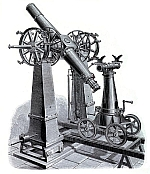
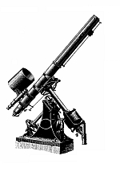
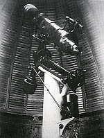

Strumenti storici
Strumenti astronomici dell'Osservatorio Imperiale e Reale della Marina di Pola
Attraverso uno studio più approfondito della storia dell'Osservatorio di Pola, si è venuti a conoscenza dell'esistenza dei seguenti strumenti astronomici.
Strumento dei passaggi "Brunner"
Fu costruito nel 1842 nell'officina meccanica dell'Istituto Politecnico di Vienna. Fu utilizzato all'Osservatorio quando era ancora a Trieste, e fu trasferito a Pola nel 1866 insieme all'Osservatorio stesso. Fu collocato nella sala meridiana dove veniva utilizzato per il servizio del tempo esatto, nonché per la determinazione delle longitudini e latitudini geografiche. Fu rimosso nel 1874. Non si sa dove si trovi oggi.
Rifrattore "Schaffler"
Fu costruito dal meccanico viennese Otto Schafler. Fu installato nella cupola sud-occidentale dell'Osservatorio nel 1871. Aveva un obiettivo con un diametro di 170 mm e una lunghezza focale di 2500 mm. Era montato su una montatura equatoriale tedesca con cerchi di misura del diametro di 240 mm. Non si sa dove si trovi oggi.

Cerchio meridiano "Troughton & Simms"
Fu costruito dalla ditta inglese "Troughton & Simms". Fu consegnato a Pola nell'agosto del 1874. Aveva un obiettivo con un diametro di 160 mm e una lunghezza focale di 2105 mm. Veniva utilizzato per le esigenze del servizio del tempo esatto. Alla fine della Prima Guerra Mondiale fu rilevato dall'Osservatorio Astronomico di Trieste, in possesso del quale si trova ancora oggi.

Riflettore "Brachyt"
Fu costruito dalla ditta viennese Fritch. Fu installato il 1° giugno 1881. Aveva uno specchio con un diametro di 300 mm, il che lo rendeva il più grande telescopio riflettore di questo tipo al mondo. Poiché le particelle di sale portate dal vento marino danneggiavano troppo spesso il rivestimento d'argento degli specchi, questo telescopio fu rimosso già nel 1886. Non si sa dove si trovi oggi.

Rifrattore "Steinheil"
Fu costruito dalla ditta Reinfelder und Herdtel. Fu installato nel 1886 nella cupola nord-orientale. Aveva un obiettivo con un diametro di 60 mm e una lunghezza focale di 2100 mm. Veniva utilizzato per l'osservazione delle macchie solari. Alla fine della Prima Guerra Mondiale fu rilevato dall'Osservatorio Astronomico di Trieste.
Strumento dei passaggi "Repsold"
Fu installato nella cupola nord-orientale dell'Osservatorio di Pola nel 1898. Veniva utilizzato dal Servizio del tempo esatto quando il cerchio meridiano era impegnato nella determinazione delle posizioni stellari. Le sue caratteristiche ottiche non sono note. Non si sa dove si trovi oggi.